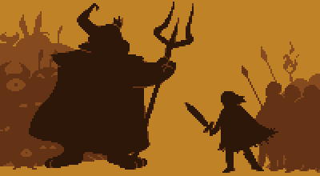
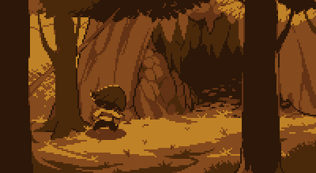

Tiempo atrás, dos razas reinaban sobre la Tierra: Los Humanos y los Monstruos. Un día, la guerra estalló
entre las dos razas y tras una larga serie de batallas, los humanos vencieron. Los mejores y más grandes
magos humanos sellaron a los monstruos bajo tierra, en el Subterráneo con una barrera mágica.
Varios años después de la guerra, en el 201X, un infante humano escaló el Monte Ebott por razones
desconocidas. Existe un dicho que quienes escalan el Monte, nunca vuelven. El protagonista descubre una
enorme abertura en la montaña y cae dentro de la cueva. Aquí es
donde empieza su aventura.